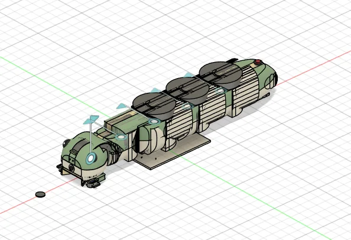
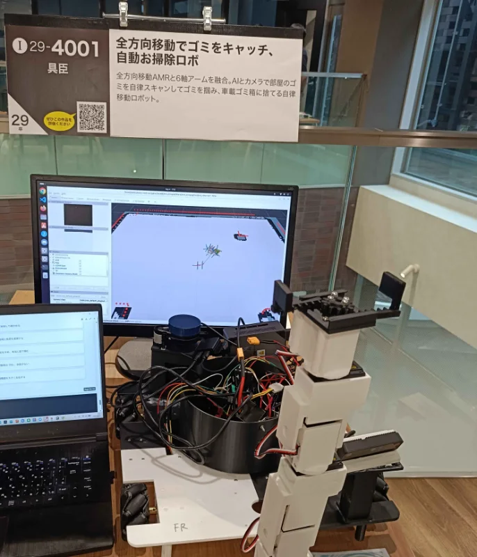

服部 将眞 / TECHNICAL PORTFOLIO
想像した未来を、
技術で現実に。
ロボティクスを中心に、機械設計・電子回路・制御・ソフトウェア・AIを組み合わせてものづくりに取り組む学生です。「こんな仕組みがあったら」という構想を、設計と試作、シミュレーションを行き来しながら形にしています。
ECCコンピュータ専門学校 / IoT部 副部長

具臣 / Auto-Trash Navigator の展示記録
機械設計 / Fusion 360電子回路 / KiCad・ESP32制御 / ROS 2ソフトウェア / Python・C++AI / エージェント活用
SELECTED PROJECTS
構想から、手を動かして。
AIに任せる作業と、自分で決めること。
目的と設計方針を決め、AIに調査・実装・テストを分担してもらう。その結果を確かめ、次の判断につなげる。この流れ自体も開発の対象です。
例えばSerpensでは、自分で機構や可動域を考え、AIにコードやシミュレーションの作成を分担。結果を設計と照合し、次に試す条件を判断しています。実機での動作確認はこれからです。
AIを活用した開発手法 →